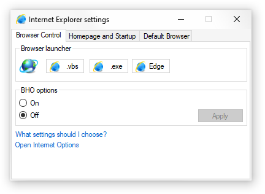
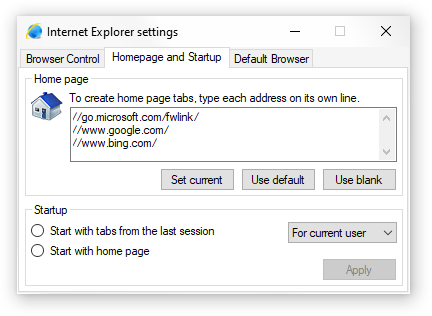
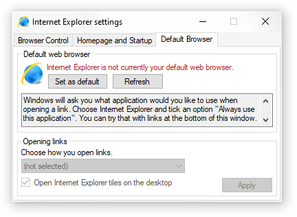

Internet Explorer settings is an appletAn applet is a component of a program that performs a function or a set of functions related to the same field. that allows you to re-enable Internet ExplorerInternet Explorer (IE) is a web browser that was developed by Microsoft from 1995 to 2016 and is bundled with Windows since its release. It is widely remembered for being very slow and unsafe. These factors contributed to the retirement of the IE in favour of Edge. web browserA web browser is a software that is used for viewing (browsing) Internet websites. You are using it right now to read this documentation. and change some of the settings that were removed in newer Windows updates.
|  |
|
Browser Launcher page
|
For this purpose, use Browser Launcher tab.A tab is a page of an application. Tabs can be switched using a list on the top. There are two different ways for launching Internet Explorer.
Microsoft removed several important settings from the Internet Options applet. These include homepageA homepage is a website that opens every time you start your browser. settings and the ability to set Internet Explorer as your default browser. This applet brings them back.
|  |
|
Homepage and Startup page
|
To set the homepage, select Homepage and Startup tab and write the full addressShould look similar to "https://sitename.com/". of the website into the large textbox in the Home page group and the click Set current button. To set MSN website as a homepage, click Set default button. To set blank page, click Set blank button.
Below Home page are Startup options. You can choose whether you want to start Internet Explorer with the tabs from last session (last time you used your browser) or with the home page. Just click on the option you want to choose and then click Apply button.
|  |
|
Default Browser page
|
The following is for Windows 10 21H1 and earlier only.
To set Internet Explorer as your default web browser, open the Default Browser tab and click Set as default button. Then, click Refresh button to see the results.